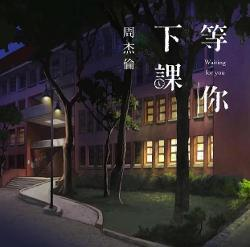

《枫》
乌云在我们心里搁下一块阴影 我聆听沉寂已久的心情 清晰透明 就像美丽的风景 总在回忆里才看的清 被伤透的心能不能够继续爱我 我用力牵起没温度的双手 过往温柔 已经被时间上锁 只剩挥散不去的难过 缓缓飘落的枫叶像思念 我点燃烛火温暖岁末的秋天 极光掠夺天边 北风掠过想你的容颜 我把爱烧成了落叶 却换不回熟悉的那张脸 缓缓飘落的枫叶像思念 为何挽回要赶在冬天来之前 爱你穿越时间 两行来自秋末的眼泪 让爱渗透了地面 我要的只是你在我身边 被伤透的心能不能够继续爱我 我用力牵起没温度的双手 过往温柔已经被时间上锁 只剩挥散不去的难过 在山腰间飘逸的红雨 随著北风凋零我轻轻摇曳风铃 想唤醒被遗弃的爱情 雪花已铺满了地 深怕窗外枫叶已结成冰 缓缓飘落的枫叶像思念 我点燃烛火温暖岁末的秋天 极光掠夺天边 北风掠过想你的容颜 我把爱烧成了落叶 却换不回熟悉的那张脸 缓缓飘落的枫叶像思念 为何挽回要赶在冬天来之前 爱你穿越时间 两行来自秋末的眼泪 让爱渗透了地面 我要的只是你在我身边
《蒲公英的约定》
小学篱芭旁的蒲公英 是记忆里有味道的风景 午睡操场传来蝉的声音 多少年后也还是很好听 将愿望折纸飞机寄成信 因为我们等不到那流星 认真投决定命运的硬币 却不知道到底能去哪里 一起长大的约定 那样清晰打过勾的我相信 说好要一起旅行 是你如今唯一坚持的任性 在走廊上罚站打手心 我们却注意窗边的蜻蜓 我去到哪里你都跟很紧 很多的梦在等待着进行 一起长大的约定 那样真心 与你聊不完的曾经 而我已经分不清 你是友情还是错过的爱情
《晴天》
故事的小黄花 从出生那年就飘着 童年的荡秋千 随记忆一直晃到现在 rui sou sou xi dou xi la sou la xi xi xi xi la xi la sou 吹着前奏望着天空 我想起花瓣试着掉落 为你翘课的那一天 花落的那一天 教室的那一间 我怎么看不见 消失的下雨天 我好想再淋一遍 没想到失去的勇气我还留着 好想再问一遍 你会等待还是离开 刮风这天我试过握着你手 但偏偏雨渐渐大到我看你不见 还要多久我才能在你身边 还要多久我才能够在你身边 等到放晴的那天也许我会比较好一点 等到放晴那天也许我会比较好一点 从前从前有个人爱你很久 但偏偏风渐渐把距离吹得好远 偏偏风渐渐把距离吹得好远 但偏偏雨渐渐把距离吹得好远 好不容易又能再多爱一天 但故事的最后你好像还是说了拜拜 但故事的最后你好像还是说
《等你下课》
 你住的 巷子里 我租了一间公寓 为了想与你不期而遇 高中三年 我为什么 为什么不好好读书 没考上跟你一样的大学 我找了份工作 离你宿舍很近 当我开始学会做蛋饼 才发现你 不吃早餐 喔 你又擦肩而过 你耳机听什么 能不能告诉我 躺在你学校的操场看星空 教室里的灯还亮着你没走 记得 我写给你的情书 都什么年代了 到现在我还在写着 总有一天总有一年会发现 有人默默的陪在你的身边 也许 我不该在你的世界 当你收到情书 也代表我已经走远 学校旁 的广场 我在这等钟声响 等你下课一起走好吗 弹着琴 唱你爱的歌 暗恋一点都不痛苦（一点都不痛苦） 痛苦的是你 根本没看我 我唱这么走心 却走不进你心里（这么走心 进你心里） 在人来人往 找寻着你 守护着你 不求结局 喔 你又擦肩而过（喔 而过） 我唱告白气球 终于你回了头 躺在你学校的操场看星空 教室里的灯还亮着你没走 记得 我写给你的情书 都什么年代了 到现在我还在写着 总有一天总有一年会发现 有人默默的陪在你的身边 也许 我不该在你的世界 当你收到情书 也代表我已经走远